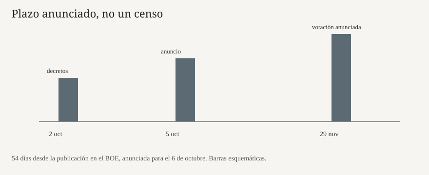

Madrid · elecciones · 5 de octubre de 2026
Pedro Sánchez anunció la disolución de las Cortes y elecciones el 29 de noviembre
_01.jpg)
Lo que coinciden las redacciones
El lunes 5 de octubre de 2026, Pedro Sánchez compareció en el complejo de La Moncloa y anunció que convocaría un Consejo de Ministros extraordinario esa misma mañana para disolver las Cortes Generales y convocar elecciones generales el domingo 29 de noviembre. La Moncloa publicó el anuncio en castellano y en inglés y dijo que el decreto se publicaría al día siguiente en el Boletín Oficial del Estado. Reuters, en una nota breve firmada desde Madrid por David Latona, registró la misma fecha. Telemadrid, citando agencias, añadió que Sánchez había informado al rey y que el decreto de convocatoria saldría el martes en el BOE.
El calendario no es una preferencia de campaña. La Ley Orgánica del Régimen Electoral General fija 54 días entre la publicación de la convocatoria y la votación. Desde una publicación el 6 de octubre, ese cómputo cae el 29 de noviembre. Hasta que el real decreto aparezca en el BOE, la disolución es una decisión anunciada y un trámite de Consejo, no todavía un texto publicado. El domingo, las crónicas decían que no había decreto. El lunes, el hecho nuevo es el anuncio presidencial y la reunión extraordinaria, no el facsímil del BOE.
El detonante inmediato que describen las redacciones es parlamentario. El viernes 2 de octubre el Congreso rechazó dos reales decretos-ley del Gobierno sobre vivienda. Las crónicas del día anterior de este dossier recogían votaciones de 172 a 178 y de 166 a 184. Sánchez había dicho en público, durante la legislatura abierta en 2023, que los comicios serían en 2027. Reuters, en la nota previa a las 9:00 hora peninsular, recordó esa insistencia y citó a un portavoz del Gobierno que no adelantó el contenido.
Lo que es solo una cita
En el texto difundido por La Moncloa, Sánchez pidió una mayoría progresista más amplia para “doblegar a las élites” y planteó la elección como una alternativa entre una “ola ultraderechista” y un “baluarte de apertura”. Eso es el argumento del orador. No es un recuento de escaños, ni una sentencia, ni un dato del Instituto Nacional de Estadística. EFE, reproducida por El Mundo de El Salvador, recogió esas frases como discurso. Un artículo que las presente como descripción del país, y no como línea del presidente, baja en complicidad porque convierte una pieza de campaña en un hecho del mundo.
También es cita, no medición, la afirmación de que España es la economía que más crece y más empleo crea de la Unión Europea, y que el poder adquisitivo ha subido el triple que en Francia y Alemania. Esas comparaciones pueden comprobarse con Eurostat y con las cuentas nacionales, pero el discurso no adjunta la tabla ni el periodo. Hasta que una oficina estadística publique la serie que el presidente tiene en la cabeza, la frase queda como reclamo de gestión.
Las causas que añaden los comentaristas no están en el decreto. Reuters Breakingviews escribe que el momento nace en buena parte de investigaciones de corrupción que afectan a la esposa, al hermano y a cargos del PSOE, de la falta de presupuestos desde 2023 y de la crisis de Ceuta. Es una interpretación de columna. El anuncio oficial habla de vivienda, de reformas pendientes y de renovar el apoyo. Las dos cosas pueden ser ciertas a la vez como motivos políticos; solo el anuncio y la votación del viernes son documentos.
El mecanismo que hace falta para leer el día
En España el presidente del Gobierno no disuelve las Cortes con un tuit. El artículo 115 de la Constitución permite la disolución anticipada, tras deliberación del Consejo de Ministros y bajo la exclusiva responsabilidad del presidente, con firma del rey. No cabe disolución cuando está en trámite una moción de censura, ni en el último año de la legislatura en algunos supuestos de estados excepcionales, ni antes de un año desde la disolución anterior. La legislatura salió de las urnas de julio de 2023; el plazo de un año no bloquea esta convocatoria. El rey no elige la fecha: sanciona el decreto que le presenta el Gobierno.
Un real decreto-ley, el instrumento que cayó el viernes, es legislación de urgencia. Entra en vigor al publicarse y el Congreso debe convalidarlo o derogarlo en treinta días. Derogar no anula el debate de vivienda. Deja sin efecto esas normas concretas: topes, prórrogas o procedimientos que el Gobierno había atado al desahucio de una mujer de 87 años en el barrio de Retiro, Maricarmen, que las marchas del sábado convirtieron en nombre de la crisis. Las cifras de asistencia del sábado —70.000 de la delegación del Gobierno y 500.000 de los convocantes— siguen sin una auditoría común. No explican por sí solas un decreto de disolución.
Con las Cortes disueltas, el Gobierno queda en funciones. Puede despachar asuntos ordinarios y no puede, como regla, comprometer la acción del siguiente ejecutivo con normas de fondo. La campaña de 54 días comprime primarias internas, coaliciones y el debate de investidura posterior. Quien gane el 29 de noviembre no gobierna esa noche: necesita una mayoría de investidura en el Congreso, el mismo problema de socios que Sánchez citó al explicar por qué quería una mayoría más ancha.
Lo que esta nota no es
No es un pronóstico. No hay sondeo nuevo en las piezas de esta mañana que fije escaños. No es la publicación del BOE: esa página, si sale el martes, será el texto jurídico. No es una sentencia sobre las causas de vivienda ni sobre las investigaciones judiciales ajenas al decreto. No es una fotografía de la comparecencia: la imagen es la fachada de 2014.

_01.jpg){kind=link}
Artículos fuente y puntuaciones
| Medio | Titular | T | N | C |
|---|---|---|---|---|
| La Moncloa | Pedro Sánchez announces the calling of general elections for November 29th | 88 | -18 | 62 |
| Reuters | Spanish PM Sanchez calls snap election for November 29 | 96 | 0 | 100 |
| Reuters | Spanish PM Sanchez to make morning announcement amid speculation about early election | 93 | 0 | 96 |
| Telemadrid | Sánchez disuelve las Cortes y convoca elecciones para el 29 de noviembre | 91 | -4 | 86 |
| EFE / El Mundo (El Salvador) | Pedro Sánchez anuncia el adelanto de elecciones españolas al 29 de noviembre | 90 | -6 | 78 |